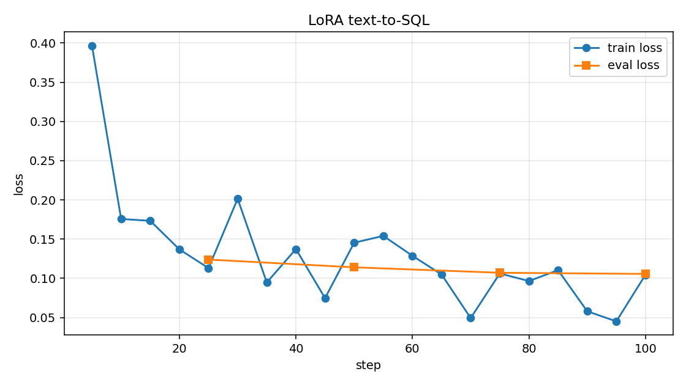

Qwen2.5-0.5B-Instruct дообучена LoRA на готовом датасете Hugging Face. Сравнение с базовой моделью — на 20 одних и тех же запросах. Обучение шло на s1, без видеокарты.
8 / 14точных SQL после LoRA. У базы — 0 / 14
28 минсамо обучение, 100 шагов
0.40 → 0.11train loss, eval loss до 0.106
5запросов, где адаптер стал хуже
Что требовалось
Взять готовый датасет, где поведение модели меняется заметно: узкая роль и жёсткий формат ответа. Привести примеры к шаблону выбранной модели. Выбрать маленькую открытую модель под доступную память. Обучить LoRA или QLoRA, следить за лоссом, сохранить адаптер. Прогнать 20 запросов на базовой и дообученной модели и отдельно найти места, где стало хуже.
Датасет — b-mc2/sql-create-context. Роль узкая: по схеме таблицы и вопросу ответить одним SQL-запросом. Формат жёсткий: без пояснений, с двойными кавычками и нижним регистром литералов, как в примерах.
Что такое лосс
Лосс — одно число, насколько вероятности модели расходятся с правильным продолжением. Здесь это cross-entropy только по токенам ответа. Схема и вопрос в лосс не входят: их токены помечены и модель за них не штрафуется. На каждом шаге она смотрит на эталонный SQL и получает штраф, если ставит ему низкую вероятность. Меньше лосс — ближе к примерам датасета.
Следили по логу Trainer. Каждые 5 шагов записан train loss, каждые 25 шагов — eval loss на 32 примерах, которые в обучение не входили. Цифры лежат в loss.jsonl на сервере, график — ниже.
Train loss на шаге 5 был 0.397 и к концу эпохи колебался около 0.05–0.15. Среднее по всему прогону — 0.130. Eval loss снижался рядом с ним: 0.124, затем 0.114, 0.107 и 0.106. Он не пошёл вверх, значит модель не просто зазубрила 400 обучающих примеров.

Синяя линия скачет, потому что каждый train loss — это короткий кусок из нескольких примеров. Оранжевая — оценка на одной и той же отложенной выборке, она гладкая и падает.
Шаг
Train loss
Eval loss
5
0.397
—
10
0.176
—
15
0.173
—
20
0.137
—
25
0.113
0.124
30
0.202
—
35
0.095
—
40
0.137
—
45
0.075
—
50
0.145
0.114
55
0.154
—
60
0.129
—
65
0.105
—
70
0.049
—
75
0.106
0.107
80
0.097
—
85
0.110
—
90
0.058
—
95
0.045
—
100
0.105
0.106
Модель и железо
На s1 (10.10.1.101) нет NVIDIA, только встроенная графика Intel. Процессор — Intel Core i5-4278U, 2 ядра и 4 потока, 2.60 ГГц. Памяти 16 ГБ. QLoRA в 4-bit через bitsandbytes требует CUDA, поэтому обучали обычную LoRA в fp32.
Модель — Qwen/Qwen2.5-0.5B-Instruct, 495 114 112 параметров. В адаптере обучались 1 081 344 параметра, это 0.22%. Затронуты матрицы внимания q_proj, k_proj, v_proj, o_proj. Ранг LoRA 8, alpha 16, dropout 0.05.
Контейнер lora-lab на Python 3.12. Стек: torch 2.5.1+cpu, transformers 4.46.3, peft 0.13.2, datasets 3.1.0. Лимит контейнера — 6 ГБ памяти и 3 CPU, чтобы не задеть GitLab и Ollama на том же хосте. По факту обучение заняло около 2.3 ГБ.
Параметры запуска
Датасет
b-mc2/sql-create-context, 78 577 строк. После фильтра длины осталось 78 550
Разбиение
400 train, 32 eval, 14 контрольных SQL. Перемешивание с seed 42. Контрольные вопросы взяты раньше обучающих и в обучение не входили
Длина
не длиннее 700 символов и 320 токенов
Эпоха
1
Шаги
100. Batch 1, накопление градиента 4
Оптимизатор
AdamW, learning rate 2e-4, cosine, warmup 5%, weight decay 0.01, max grad norm 1.0
Точность
fp32, градиентный чекпоинт включён
Генерация на сравнении
жадная, do_sample выключен. До 80 новых токенов на SQL и до 120 на обычных вопросах
Сколько это заняло
Старт обучения
27 октября 2026, 22:30:35 МСК
Конец обучения
27 октября 2026, 22:59:18 МСК
Чистое обучение
28 минут 10 секунд (1690 с). 0.237 примера в секунду, 0.059 шага в секунду
Вместе с подготовкой данных в этом прогоне
28 минут 42 секунды
Сравнение 20 запросов
3 минуты 3 секунды. База — 88 с, адаптер — 91 с
Образ с PyTorch собирался отдельно, около 5 минут. Веса модели, около 950 МБ, скачались один раз до полного прогона.
Как примеры легли в шаблон модели
У Qwen2.5 шаблон чата — ChatML. В system записана роль, в user — схема и вопрос, в assistant — ответ из датасета без переписывания. Лосс считался только на реплике assistant.
<|im_start|>system
You translate a question about a database into one SQL query. Reply with the SQL query only, without explanation.<|im_end|>
<|im_start|>user
Schema:
CREATE TABLE table_name_50 (venue VARCHAR, away_team VARCHAR)
Question: When Essendon played away; where did they play?<|im_end|>
<|im_start|>assistant
SELECT venue FROM table_name_50 WHERE away_team = "essendon"<|im_end|>
На сравнении SQL-вопросы шли с этим же system. Шесть обычных вопросов шли с другим, одинаковым для обеих моделей: «You are a helpful assistant. Answer directly and briefly.» Так видно, не разучилась ли модель говорить не на SQL.
Точное совпадение SQL считалось после нижнего регистра, сжатия пробелов и снятия точки с запятой. Поэтому 'Phoenix' и "phoenix" — разные ответы, а разный регистр внутри уже совпавшей фразы не ломает зачёт.
Двадцать запросов
Метка на карточке — чтение ответа, не только автоматический счётчик. Автомат видел 8 улучшений и 12 «так же»: он ставит «лучше» лишь при точном SQL или когда SQL появился там, где база его не выдала. Он не замечает, что оба ответа неточные, но адаптер ушёл дальше от эталона. Таких мест три в SQL и два в обычных вопросах.
s1лучшеSQL
Запрос
Schema:
CREATE TABLE table_name_50 (venue VARCHAR, away_team VARCHAR)
Question: When Essendon played away; where did they play?
База
WHERE away_team = 'Essendon' AND venue IS NOT NULL
После LoRA
SELECT venue FROM table_name_50 WHERE away_team = "essendon"
Эталон
SELECT venue FROM table_name_50 WHERE away_team = "essendon"
База оборвала запрос на условии WHERE и не написала SELECT. Адаптер совпал с эталоном.
s2лучшеSQL
Запрос
Schema:
CREATE TABLE table_name_61 (game INTEGER, opponent VARCHAR, record VARCHAR)
Question: What is the lowest numbered game against Phoenix with a record of 29-17?
База
SELECT MIN(game) FROM table_name_61 WHERE opponent = 'Phoenix' AND record = '29-17'
После LoRA
SELECT MIN(game) FROM table_name_61 WHERE opponent = "phoenix" AND record = "29-17"
Эталон
SELECT MIN(game) FROM table_name_61 WHERE opponent = "phoenix" AND record = "29-17"
Форма запроса у обеих верна. Адаптер попал в двойные кавычки и нижний регистр датасета.
s3лучшеSQL
Запрос
Schema:
CREATE TABLE table_name_37 (opponent VARCHAR, week VARCHAR)
Question: Who did the Texan's play on Week 4?
База
SELECT opponent FROM table_name_37 WHERE week = 'Week 4'
После LoRA
SELECT opponent FROM table_name_37 WHERE week = "4"
Эталон
SELECT opponent FROM table_name_37 WHERE week = "4"
База подставила текст Week 4. Адаптер записал код недели так же, как эталон: "4".
s4хужеSQL
Запрос
Schema:
CREATE TABLE table_name_70 (points INTEGER, touchdowns VARCHAR, extra_points VARCHAR)
Question: Which Points have Touchdowns larger than 0, and an Extra points smaller than 0?
База
SELECT points FROM table_name_70 WHERE touchdowns > 0 AND extra_points < 0
После LoRA
SELECT AVG(points) FROM table_name_70 WHERE touchdowns > 0 AND extra_points < 0
Эталон
SELECT SUM(points) FROM table_name_70 WHERE touchdowns > 0 AND extra_points < 0
Эталон считает SUM(points). База хотя бы взяла столбец points. Адаптер подставил AVG.
s5хужеSQL
Запрос
Schema:
CREATE TABLE table_name_83 (name VARCHAR, moving_to VARCHAR, nat VARCHAR, transfer_window VARCHAR)
Question: What is the name of the player who is Sco and moving to greenock morton in the summer?
База
SELECT name FROM table_name_83 WHERE moving_to = 'greenock morton' AND nat = 'sco' AND transfer_window LIKE '%summer%'
После LoRA
SELECT name FROM table_name_83 WHERE moving_to = "greenock morton" AND nat = "sco"
Эталон
SELECT name FROM table_name_83 WHERE nat = "sco" AND transfer_window = "summer" AND moving_to = "greenock morton"
В эталоне три фильтра, включая летнее трансферное окно. База все три сохранила. Адаптер окно выкинул.
s6так жеSQL
Запрос
Schema:
CREATE TABLE votes (contestant_number VARCHAR); CREATE TABLE contestants (contestant_number VARCHAR, contestant_name VARCHAR)
Question: Of all the contestants who got voted, what is the contestant number and name of the contestant who got least votes?
База
SELECT T2.contestant_number, T2.contestant_name FROM contestants AS T1 JOIN votes AS T2 ON T1.contestant_number = T2.contestant_number GROUP BY T2.contestant_number ORDER BY COUNT(T1.contestant_number) LIMIT 1
После LoRA
SELECT T2.contestant_number, T1.contestant_name FROM contestants AS T1 JOIN votes AS T2 ON T1.contestant_number = T2.contestant_number GROUP BY T2.contestant_number ORDER BY COUNT(*) LIMIT 1
Эталон
SELECT T1.contestant_number, T1.contestant_name FROM contestants AS T1 JOIN votes AS T2 ON T1.contestant_number = T2.contestant_number GROUP BY T1.contestant_number ORDER BY COUNT(*) LIMIT 1
Оба собрали JOIN и LIMIT 1, но ни один не совпал с эталоном. Разница в алиасах таблиц.
s7лучшеSQL
Запрос
Schema:
CREATE TABLE table_name_50 (venue VARCHAR, result VARCHAR)
Question: Which venue had the result 7-1?
База
SELECT venue FROM table_name_50 WHERE result = '7-1'
После LoRA
SELECT venue FROM table_name_50 WHERE result = "7-1"
Эталон
SELECT venue FROM table_name_50 WHERE result = "7-1"
Смысл один и тот же. Точным ответ адаптера делает оформление литерала: "7-1".
s8так жеSQL
Запрос
Schema:
CREATE TABLE table_name_22 (Id VARCHAR)
Question: What did the tournament that got an A in 1945 get in 1949?
База
SELECT T22.`id` FROM table_name_22 AS T22 INNER JOIN (
SELECT Id FROM table_name_22 WHERE Year = 1945 GROUP BY Id
) AS T1 ON T22.Id = T1.Id AND T22.Year = 1949
После LoRA
SELECT COUNT(Id) FROM table_name_22 WHERE year = "1949" AND type = "a"
Эталон
SELECT 1949 FROM table_name_22 WHERE 1945 = "a"
В схеме нет колонок с годами, эталон сам странный. Обе модели выдумали свой запрос и промахнулись.
s9так жеSQL
Запрос
Schema:
CREATE TABLE college (state VARCHAR, enr INTEGER)
Question: Find the states where have the colleges whose enrollments are less than the largest size.
База
SELECT state FROM college WHERE enr < (SELECT MAX(enrollments) FROM college)
После LoRA
SELECT state FROM college WHERE enr < (SELECT MAX(enrollments) FROM college)
Эталон
SELECT DISTINCT state FROM college WHERE enr < (SELECT MAX(enr) FROM college)
Ответы совпали дословно. Обе подставили несуществующий столбец enrollments вместо enr.
s10лучшеSQL
Запрос
Schema:
CREATE TABLE table_24648983_1 (title VARCHAR, us_viewers__million_ VARCHAR)
Question: What is the name of the episode that had 9.89 million U.S. viewers?
База
SELECT title FROM table_24648983_1 WHERE us_viewers__million_ = '9.89'
После LoRA
SELECT title FROM table_24648983_1 WHERE us_viewers__million_ = "9.89"
Эталон
SELECT title FROM table_24648983_1 WHERE us_viewers__million_ = "9.89"
Запрос тот же. Адаптер совпал с эталоном за счёт двойных кавычек.
s11хужеSQL
Запрос
Schema:
CREATE TABLE Bookings (Workshop_Group_ID VARCHAR, Status_Code VARCHAR); CREATE TABLE Drama_Workshop_Groups (Store_Name VARCHAR, Workshop_Group_ID VARCHAR)
Question: What are the names of the workshop groups that have bookings with status code "stop"?
База
SELECT Store_Name FROM Drama_Workshop_Groups WHERE Workshop_Group_ID IN (SELECT Workshops.Workshop_Group_ID FROM Bookings WHERE Status_Code = 'Stop')
После LoRA
SELECT Store_Name FROM Drama_Workshop_Groups WHERE Workshop_Group_ID IN (SELECT Workshops FROM Bookings WHERE Status_Code = "Stop")
Эталон
SELECT T2.Store_Name FROM Bookings AS T1 JOIN Drama_Workshop_Groups AS T2 ON T1.Workshop_Group_ID = T2.Workshop_Group_ID WHERE T1.Status_Code = "stop"
Оба не собрали нужный JOIN. База ошиблась в алиасе, но читала настоящий столбец. Адаптер выдумал столбец Workshops.
s12лучшеSQL
Запрос
Schema:
CREATE TABLE table_name_96 (location VARCHAR, opponenent VARCHAR)
Question: Where was the opponent Germany?
База
SELECT location FROM table_name_96 WHERE opponenent = 'Germany'
После LoRA
SELECT location FROM table_name_96 WHERE opponenent = "germany"
Эталон
SELECT location FROM table_name_96 WHERE opponenent = "germany"
База написала 'Germany'. Адаптер попал в "germany", как в эталоне.
s13лучшеSQL
Запрос
Schema:
CREATE TABLE table_1342149_24 (candidates VARCHAR, result VARCHAR)
Question: Name the candidates for result of lost renomination democratic loss
База
SELECT candidates FROM table_1342149_24 WHERE result = 'lost renomination' AND result != 'won'
После LoRA
SELECT candidates FROM table_1342149_24 WHERE result = "Lost Renomination Democratic Loss"
Эталон
SELECT candidates FROM table_1342149_24 WHERE result = "Lost renomination Democratic loss"
База разрезала фразу результата на два условия. Адаптер оставил её целиком и совпал с эталоном.
s14лучшеSQL
Запрос
Schema:
CREATE TABLE table_1341930_5 (party VARCHAR, district VARCHAR)
Question: What is the number of party in the arkansas 1 district
База
SELECT COUNT(DISTINCT party) FROM table_1341930_5 WHERE district = 'Arkansas 1'
После LoRA
SELECT COUNT(party) FROM table_1341930_5 WHERE district = "Arkansas 1"
Эталон
SELECT COUNT(party) FROM table_1341930_5 WHERE district = "Arkansas 1"
База добавила DISTINCT, которого в эталоне нет. Адаптер повторил COUNT(party).
g1так жеобычный вопрос
Запрос
What is the capital of France?
База
The capital of France is Paris.
После LoRA
The capital of France is Paris.
Эталон
—
Ответ не изменился.
g2хужеобычный вопрос
Запрос
Explain photosynthesis in two short sentences.
База
Photosynthesis is the process by which plants, algae, and some bacteria convert light energy into chemical energy stored in glucose molecules, using carbon dioxide and water as reactants.
После LoRA
Photosynthesis is the process by which plants, algae, and some bacteria convert light energy into chemical energy stored in glucose molecules.
Эталон
—
Просили два коротких предложения. Обе модели дали одно. Адаптер короче и потерял углекислый газ и воду.
g3так жеобычный вопрос
Запрос
Write a one-sentence greeting to a colleague.
База
Good day, [Colleague's Name], and welcome back!
После LoRA
Good day, [Colleague's Name], and welcome back!
Эталон
—
Ответ не изменился.
g4так жеобычный вопрос
Запрос
How much is 17 multiplied by 3?
База
17 multiplied by 3 equals 51.
После LoRA
17 multiplied by 3 equals 51.
Эталон
—
Оба посчитали 51.
g5так жеобычный вопрос
Запрос
Name three prime numbers.
База
Three prime numbers are 2, 3, and 5.
После LoRA
Three prime numbers are 2, 3, and 5.
Эталон
—
Оба назвали 2, 3 и 5.
g6хужеобычный вопрос
Запрос
Напиши одно предложение про осенний дождь.
База
Осенью дожди стали сильнее, чем обычно.
После LoRA
Осенью, когда дожди начинают сменяться на морозы, яркие цветки ветвей и зелёные листья становятся ярче и краснее.
Эталон
—
База написала одно простое предложение про дождь. Адаптер смешал дождь, мороз, цветы и листья.
Что изменилось
Адаптер перенял формат датасета. На простых запросах он пишет один SQL, с двойными кавычками и нижним регистром литералов, и чаще попадает в эталон. Точные попадания: s1, s2, s3, s7, s10, s12, s13, s14. У базы точных не было. Самый заметный сдвиг — s1: база выдала обрывок условия, адаптер собрал готовый SELECT.
Что осталось прежним
Обычные факты не превратились в SQL. Дословно те же ответы на столицу Франции, приветствие коллеге, 17×3 и три простых числа. На сложных схемах обе модели по-прежнему промахиваются: s6 и s8 обе мимо, s9 ошибается одинаково и подставляет столбец enrollments.
Где стало хуже
s4. Эталон — SUM(points). База взяла столбец points. Адаптер подставил AVG(points).
s5. База сохранила фильтр летнего трансферного окна. Адаптер его выкинул и оставил только гражданство и клуб.
s11. База перепутала алиас, но читала существующий столбец. Адаптер выдумал столбец Workshops.
g2. Просили два предложения про фотосинтез. Адаптер оставил одно и убрал реагенты, которые база назвала.
g6. База написала одно ясное предложение про осенний дождь. Адаптер смешал дождь с морозом, цветами и листьями.
Где лежат файлы
На s1, каталог /home/troot/lora-lab-src/output/:
adapter/adapter_model.safetensors — сам адаптер, 4.2 МБ, вместе с токенизатором;
run_meta.json — параметры и время;
loss.jsonl — лосс по шагам;
compare.json — 20 ответов базы и адаптера;
test_sql.json — контрольные вопросы, которые не участвовали в обучении.
Скрипты обучения и сравнения: /home/troot/lora-lab-src/train.py и compare.py.